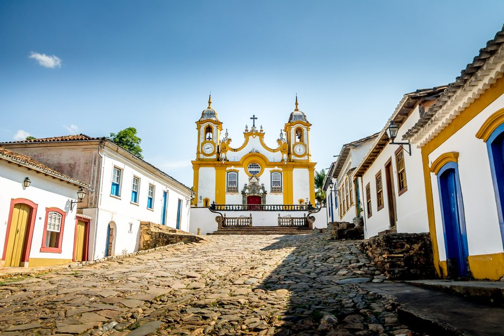
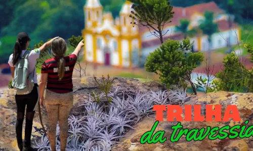
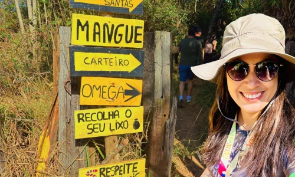
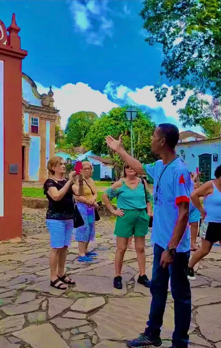

City Tour Caminhos de Tiradentes
Indicamos começar sua visita no primeiro dia com um passeio a pé pela cidade, guiado por guias de turismo que contarão histórias e curiosidades locais.
Por caminhos e becos, monumentos por dentro e por fora, trilhas repletas de história! Participe dos nossos passeios e mergulhe na riqueza cultural desta cidade encantadora.

Os melhores passeios em Tiradentes, escolhidos para revelar histórias, paisagens e experiências únicas da cidade.
Indicamos começar sua visita no primeiro dia com um passeio a pé pela cidade, guiado por guias de turismo que contarão histórias e curiosidades locais.
Um passeio noturno encantador, onde as lendas e histórias de Tiradentes ganham vida sob a luz dos lampiões, com guias apaixonados pela cidade.

AventuraPara os aventureiros! Uma caminhada desafiadora de 5 a 6 horas pela Calçada dos Escravos, pelo topo da serra, com vistas panorâmicas da cidade e mergulho na piscina natural do mangue.

NaturezaUma caminhada de 45 minutos até piscinas naturais cristalinas, proporcionando 3 horas de contato sereno com a natureza.
Registre os momentos especiais da sua visita com o renomado fotógrafo profissional Marcus Mandarino, pelo centro histórico da cidade.


Os depoimentos e avaliações dos clientes da Agência Caminhos serão inseridos aqui durante a implementação final do site.

Optar pela agência de turismo Caminhos de Tiradentes é a escolha perfeita para sua visita a esta cidade histórica. Com décadas de tradição e um profundo conhecimento local, oferecemos passeios que revelam a rica cultura e história de Tiradentes.
Venha conosco e descubra o que torna essa cidade tão especial.
Passeios ↗Deixe-nos ser seu guia e mostrar o que Tiradentes tem de melhor para oferecer.
Participe de um passeio noturno encantador, onde as lendas e histórias de Tiradentes ganham vida sob a luz dos lampiões. Descubra o lado misterioso e charmoso da cidade com nossos guias apaixonados.
Indicamos começar sua visita com um passeio a pé pela cidade, guiado por guias de turismo que contarão histórias e curiosidades locais.
↗ 02Uma caminhada de 45 minutos leva você a piscinas naturais cristalinas: 3 horas de contato sereno com a natureza.
↗ 03Para os aventureiros! Caminhada de 5 a 6 horas pela Calçada dos Escravos, com vistas panorâmicas de Tiradentes.
↗ 04Capture momentos especiais com o renomado fotógrafo Marcus Mandarino pelo centro histórico de Tiradentes.
↗Siga-nos no Instagram para ficar por dentro das novidades e saber mais sobre nós!
Seguir no Instagram ↗